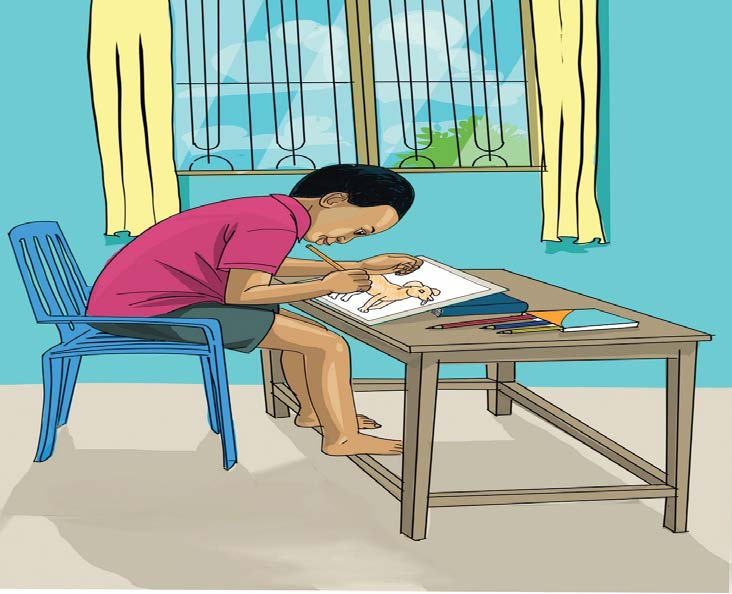

Study at the picture and answer the questions that follow:

Drawing
Questions
1. What is the pupil in the picture doing?
2. List the tools used in that work.
3. Why is it important to learn drawing and painting?
Study at the picture and answer the questions that follow:

1. What is the pupil in the picture doing?
2. List the tools used in that work.
3. Why is it important to learn drawing and painting?